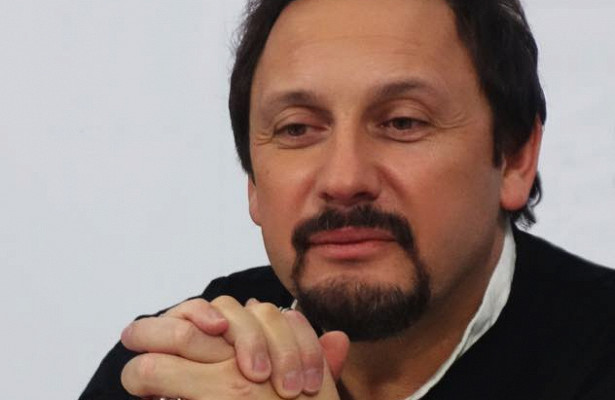
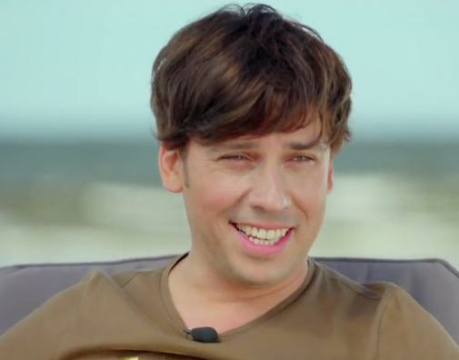

<link  rel="stylesheet" href="css/style_mp1.css">
<section id ="phon">
    <div class="container">
        <p class="nazv_nov">Концерт Стаса Михайлова в Пскове прервали из-за сообщения о бомбе
            </p>
        <p class ="text"> Как передаёт ТАСС со ссылкой на пресс-службу театрально-концертной дирекции Псковской области, эвакуировали более 700 зрителей, они ожидают возобновления мероприятия. Артист готов продолжить выступление, уточнили в организации.
            В областном главке МЧС рассказали, что группа спасателей выехала на место. Помещение обследовали сотрудники оперативных служб, но не обнаружили подозрительных предметов.


        </p>


    </div>
</section>

<section id="phon1">
    <div class="container">
        <p class="nazv_nov">Максим Галкин рассказал о конфликте со Стасом Михайловым
            </p>
        <p class ="text">Максим Галкин часто делает пародии на своих коллег по шоу-бизнесу. Кто-то из них относится к творчеству юмориста снисходительно, а другие, как признается сам артист, могут обидеться на него. К примеру, на днях Максим рассказал о конфликте со Стасом Михайловым, который был недоволен пародией на самого себя.
            «Стас Михайлов — человек, который априори не должен быть рад любой пародии на себя. Более того, он и прежде вступал в конфликты с нашим юмористическим цехом. Вот я с ним пересекаюсь в гримерке, это было года два назад. Стоит и говорит: «А что-то мне говорили ты какую-то **** про меня пел… что-то про разведенок…» Я отвечаю: «Да, пел. Более того, Стас: я сегодня снова эту пародию буду делать… Да, эту же. Другой **** у меня для Вас нет!» — рассказал Максим. При этом, Галкин уточняет: всерьез и надолго на него никто не обижается, потому, что он на самом деле добрый. Вероятно, поэтому никому из коллег по цеху, к счастью, ни разу не приходила в голову мысль нанять «братву», чтобы умерить его пыл.
            Кстати, жена юмориста — Алла Борисовна также всегда бывает недовольна пародиями Максима на себя. «Естественно, что когда ты смеешься над кем-то это может вызвать раздражение. Если говорить об Алле — она, во-первых, всегда говорит, что „это не она“. Это вообще естественное желание отрицать всякую схожесть с этим гротеском. Но иногда, когда у меня что-то получалось, она говорила: „Да, вот сейчас похоже!“ Она меня корректирует!» — поведал Максим в шоу «Честное слово с Юрием Николаевым».


    </div>
</section>

<section id="phon2">
    <div class="container">
        <p class="nazv_nov">Стас Михайлов выступит 26 декабря в Кремле со своим шоу
        </p>
        <p class ="text">Заслуженный артист России Стас Михайлов 26 декабря 2017 года выступит в Кремле. В Государственном кремлевском дворце состоится праздничное шоу «Народный корпоратив».
            «В этом году я рад пригласить зрителей в Кремль, где пройдет «Народный корпоратив 3», — сказал Стас Михайлов.
            Это будет первый и единственный предновогодний концерт артиста в Москве после масштабного турне.
            В шоу примут также участие звездные гости: Александр Маршал, Зара, Александр Коган, Елена Север, группа «Новые Самоцветы» и другие.
            Шоу «Народный корпоратив» проводится третий год подряд.</p>


    </div>
</section>
